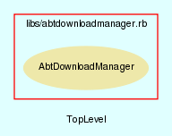

|  |
abtdownloadmanager.rb
AbtDownloadManager class handles all downloading of components needed for AbTLinux.
Created by Eric D. Schabell <erics@abtlinux.org> Copyright 2006, GPL.
This file is part of AbTLinux.
AbTLinux is free software; you can redistribute it and/or modify it under the terms of the GNU General Public License as published by the Free Software Foundation; either version 2 of the License, or (at your option) any later version.
AbTLinux is distributed in the hope that it will be useful, but WITHOUT ANY WARRANTY; without even the implied warranty of MERCHANTABILITY or FITNESS FOR A PARTICULAR PURPOSE. See the GNU General Public License for more details.
You should have received a copy of the GNU General Public License along with AbTLinux; if not, write to the Free Software Foundation, Inc., 51 Franklin St, Fifth Floor, Boston, MA 02110-1301 USA
- new
- retrieve_news_feed
- retrieve_package_source
- retrieve_package_tree
- update_package
- update_package_tree
- validated
Constructor for the AbtDownloadManager class.
RETURN AbtDownloadManager - an initialized AbtDownloadManager object.
[ show source ]
# File abtdownloadmanager.rb, line 42
42: def initialize
43: end
Retrieves the given feed and displays the news items.
PARAM String - the uri of the rss news feed to be retrieved. PARAM boolean - default is to emplty the log file, passing ‘false’ will append to news file. RETURN boolean - True if the AbTLinux news feed has been retrieved, otherwise false.
[ show source ]
# File abtdownloadmanager.rb, line 126
126: def retrieve_news_feed( uri, cleanLog=true )
127: require 'net/http'
128: require 'uri'
129: require 'rss/1.0'
130: require 'rss/2.0'
131: newsLog = ""
132: logger = Logger.new( $JOURNAL)
133:
134: # ensure we have our news logfile.
135: if ( cleanLog )
136: newsLog = File.new( $ABTNEWS_LOG, "w+" )
137: else
138: newsLog = File.new( $ABTNEWS_LOG, "a+" )
139: end
140:
141: # pick up the abtlinux.org news feed.
142: if ( !news = Net::HTTP.get( URI.parse( uri ) ) )
143: logger.info( "Failed to retrieve news feed #{uri}." )
144: return false
145: end
146:
147: # display the feeds.
148: rss = nil
149: begin
150: rss = RSS::Parser.parse(news, false)
151: rescue RSS::Error
152: end
153:
154: if ( rss.nil? )
155: logger.info( "Failed to display news feed as feed #{uri} is not RSS 1.0/2.0." )
156: return false
157: else
158: newsLog << "*** #{rss.channel.title} ***\n"
159:
160: rss.items.each_with_index do |item, itemCount|
161: itemCount += 1
162: newsLog << "#{itemCount} #{item.link} #{item.title}\n"
163: end
164: end
165:
166: newsLog << "\n\n"
167: newsLog.close
168: return true
169:
170: end
Downloads a given package source. If the file already exists, returns true as if download completed.
PARAM String - the name of the package for which the source is to be downloaded. PARAM String - the path to the download destination.
RETURN boolean - True if the package source has been downloaded, otherwise false.
[ show source ]
# File abtdownloadmanager.rb, line 56
56: def retrieve_package_source( packageName, destination )
57: require "#{$PACKAGE_PATH}#{packageName}"
58: logger = Logger.new($JOURNAL)
59: package = eval( packageName.capitalize + '.new' )
60:
61: if ( File.exist?( "#{destination}/#{File.basename( package.srcUrl )}" ) )
62: logger.info( "Download not needed, existing source found for #{packageName}" )
63: return true
64: end
65:
66: Dir.chdir( destination )
67: if ( system( "wget #{package.srcUrl}" ) )
68: logger.info( "Download completed for #{packageName}" )
69: return true
70: end
71:
72: return false # download failed.
73: end
Downloads a given pacakge tree.
PARAM String - the name of the package tree to be retrieved.
RETURN boolean - True if the package tree is retrieved, otherwise false.
[ show source ]
# File abtdownloadmanager.rb, line 83
83: def retrieve_package_tree( packageTreeName="AbTLinux" )
84: logger = Logger.new($JOURNAL)
85:
86: # check if package tree exists.
87: if File.directory?( $PACKAGE_PATH )
88: # check if svn directory.
89: if File.directory?( "#{$PACKAGE_PATH}.svn" )
90: if system( "svn update #{$PACKAGE_PATH}" )
91: logger.info "Package tree updated (svn update)"
92: else
93: logger.error "Package tree unable to update (svn update)."
94: return false
95: end
96: else
97: # package directory exists, but is not a valid tree.
98: logger.error "Package tree exists, but is not valid svn tree."
99: return false
100: end
101:
102: else
103:
104: # pacakge directory does not exist, svn co.
105: if system( "svn co #{$ABTLINUX_PACKAGES} #{$PACKAGE_PATH}" )
106: logger.info "Package tree installed (svn co)"
107: else
108: logger.error "Package tree not installed (svn co), problems!"
109: return false
110: end
111:
112: end
113:
114: return true
115: end
Updates a given package with available patches (version updates).
PARAM String - the name of the package to be updated.
RETURN boolean - True if the given package has been updated, otherwise false.
[ show source ]
# File abtdownloadmanager.rb, line 180
180: def update_package
181: end
Updates the package tree.
RETURN boolean - True if the package tree has been updated, otherwise false.
[ show source ]
# File abtdownloadmanager.rb, line 189
189: def update_package_tree
190: end
Validates the sources based on package hash value.
PARAM String - security hash value from the packages description. PARAM String - source tarball location to be checked.
RETURNS: boolean - True if the completes sucessfully, otherwise false.
[ show source ]
# File abtdownloadmanager.rb, line 201
201: def validated( hashvalue, path )
202: logger = Logger.new( $JOURNAL )
203:
204: if hashvalue == Digest::SHA1.hexdigest( path )
205: puts "Source hash validated successfully..."
206: logger.info( "Validated sources successfully..." )
207: return true
208: end
209:
210: puts "Source hash failed validation..."
211: logger.info( "Validating sources failed..." )
212: return false
213: end